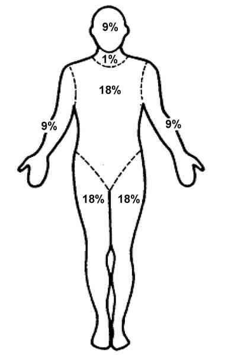
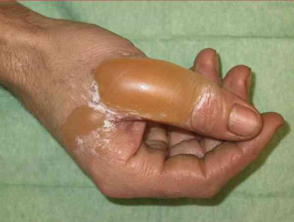
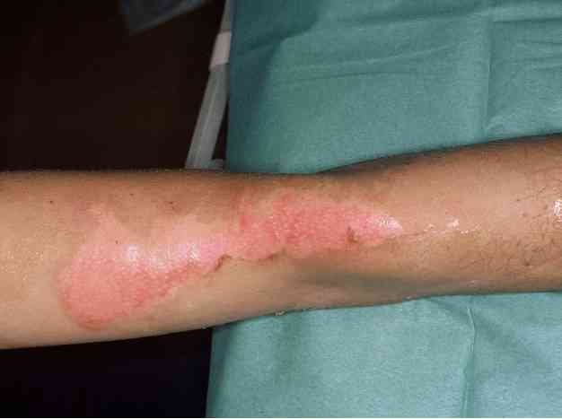
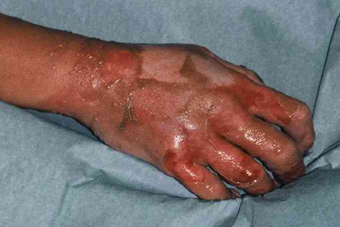
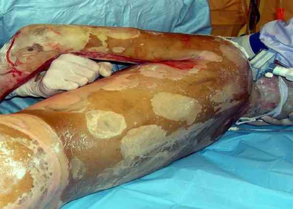
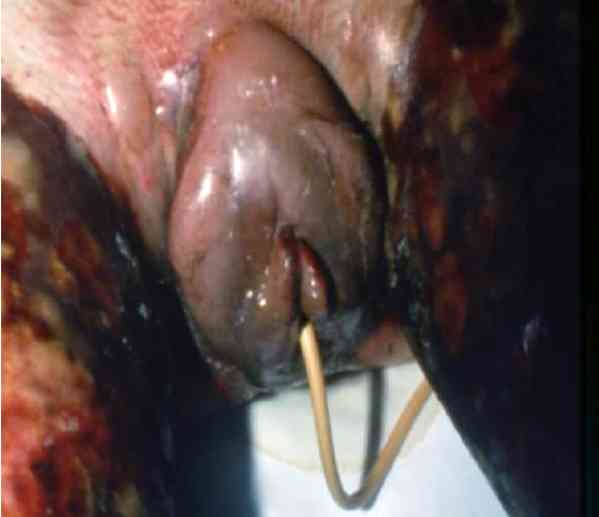
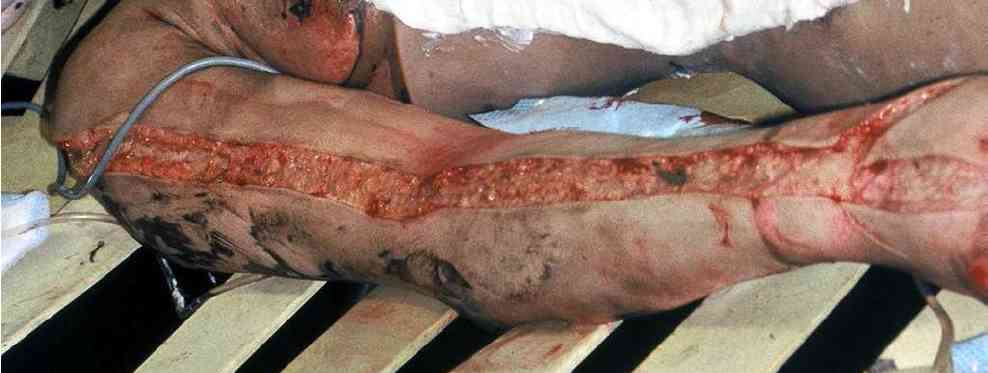

Bienvenue Sur Medical Education
Brûlure grave de l'adulte
Spécialité : traumatologie /
Points importants
-
Pathologie accidentelle fréquente : 300 000 à 400 000 nouveaux cas par an en France dont 15 000 sont hospitalisés (3 000 en centre spécialisé)
-
Accident volontiers domestique (+ de 70% des cas) ou accident du travail (+ de 20% des cas), concernant pour 30 % des enfants
-
Plusieurs types de brûlures existent : thermique, chimique, électrique, ou par radiations
-
La gravité dépend de la surface corporelle atteinte, de la profondeur et de quelques localisations particulières qui modifient le pronostic vital, esthétique ou fonctionnel
-
Le grand brûlé est hypovolémique, hypotherme et hyperalgique : il faut procéder à un remplissage massif, protéger les brûlures puis réchauffer le patient et associer une antalgie ou une sédation-analgésie efficace
-
La survie d'un grand brûlé dépend avant tout de la rapidité et de la qualité de la prise en charge médicale précoce : ce sont avant tout des patients de réanimation, puis des malades chirurgicaux
-
Principales localisations à risque : face et cou, VAS, périnée, brûlures circulaires, mains et pieds
-
Toujours penser aux lésions associées : traumatismes de tous ordres, blast, criblage, crush syndrome mais aussi et surtout aux intoxications dans les expositions aux fumées d'incendie (CO, cyanure, etc.)
-
Penser au pronostic esthétique et à la prise en charge du psychotraumatisme
Présentation clinique / CIMU
CONTEXTE
Présentation clinique / CIMU
CONTEXTE
Terrain de la brûlure
- Attention aux lésions associées : fracture de défenestration, chute d'échelle, etc.
- Intoxications aux fumées : CO, cyanures, etc.
-
Terrain personnel du brûlé majorant la gravité du pronostic :
- les âges extrêmes (jeune enfant, vieillard)
ATCD
- Diabète, immunodépression : majoration du risque infectieux
- Insuffisant cardiaque ou respiratoire : majoration des risques d'état de choc, détresse respiratoire
L'agent causal
- Thermiques : les + fréquentes
- Chimiques : les bases continuent à brûler malgré le rinçage abondant
- Electriques : lésions internes fréquentes et graves : la surface brûlée sous-estime la gravité
- Par radiations : exceptionnelles
EXAMEN CLINIQUE
Signes généraux
- Examen général, notamment cardio-vasculaire (PA, FC), pulmonaire (FR systématique), abdominal, en prenant soin de ne pas toucher inutilement les brûlures
- Evaluer la douleur par EVA ou EN
Signes spécifiques
-
Surface corporelle brûlée :
- en cas de brûlures de petites surfaces : la paume de la main du patient représente environ 1% de sa surface corporelle
- en cas de brûlure étendue, appliquer la règle des 9 de Wallace
 _11 Photo Surface corporelle
-
Profondeur de la brûlure :
- de la profondeur de la lésion, dépendent la durée de la cicatrisation, la qualité de la cicatrice et son pronostic fonctionnel et esthétique
- l'estimation de la profondeur se fait par l'inspection et la palpation des zones brûlées (avec gants stériles)
-
Brûlure superficielle de la couche cornée de l'épiderme (anciennement 1er degré) :
- peau érythémateuse et douloureuse : équivalent d'un érythème solaire
- brûlure superficielle de la couche cornée de l'épiderme
- cicatrisation spontanée après desquamation en 3 à 5 jours
-
Brûlure épidermique sans lésion de la membrane basale (anciennement 2° degré superficiel) :
- brûlure de l'épiderme respectant la membrane basale de malpighi, permettant une cicatrisation spontanée
- présence de phlyctènes (bulles) parfois spontanément rompues, dont le fond reste de couleur rosée, témoignant de la persistance de la vascularisation de la peau brûlée
- poils et annexes restent intacts
- cicatrisation en 10 à 15 jours
 _12 Photo Brûlure de la main
 _853 Photo Brûlure de la jambe
-
Brûlure épidermique avec écrêtement de la membrane basale (anciennement 2° degré profond) :
- phlyctènes profondes ou absentes avec au fond une peau décolorée, luisante, sensible et saignant au contact
- il n y a plus de couche cornée, les poils sont brûlés mais les bulbes et les glandes sudoripares de l'hypoderme sont encore respectés
- cicatrisation avec séquelles (rétraction, cicatrice disgracieuse) en 18 à 25 jours
 _13 Photo Brûlure épidermique avec écrêtement de la membrane basale
-
Brûlure épidermique avec destruction totale de la membrane basale (anciennement 3° degré) :
- destruction totale du derme : la peau est de couleur marron clair, cartonnée, dure au contact
- la lésion ne saigne pas en raison de la destruction des vaisseaux
- la zone est indolore au contact, témoignant de la destruction des nerfs superficiels (attention : les zones de 2° degré autour sont douloureuses)
- poils, bulbes et glandes sudoripares détruites
- pas de cicatrisation possible sans geste chirurgical
 _614 Photo Brûlure épidermique avec destruction totale de la membrane basale
-
Localisation de la brûlure :
-
la face :
- les brûlures de la face évoluent rapidement vers un oedème majeur rendant le patient méconnaissable, d'où l'importance de clichés photographiques précoces si l'identification initiale du brûlé n'est pas possible
- l'oedème concerne également les muqueuses et donc les VAS avec un risque évolutif de détresse respiratoire par oedème laryngé
- attention aux brûlures des vibrisses (poils du nez) et aux dépôts de suie dans les VAS : elles signent une atteinte possible des VAS
- les yeux : rarement atteints en raison du réflexe palpébral. En revanche les brûlures des paupières sont très fréquentes et de pronostic fonctionnel réservé
- les mains et pieds : pronostic fonctionnel important en raison du risque de rétractions ; nécessitent un avis spécialisé
- les plis de flexion : risque de rétractions avec limitation des amplitudes articulaires
- les brûlures circulaires : risque de syndrome de loge par rétraction cutanée et oedème
- le périnée : pronostic infectieux et fonctionnel
-
la face :
SIGNES PARACLINIQUES SIMPLES
- SpO2, température
CIMU
- Tri 1 à 5 selon la gravité des brûlures : étendue, profondeur, localisation
Signes paracliniques
BIOLOGIQUE
-
NFS (hyperleucocytose de démargination au départ, puis compatible avec un sepsis en cas de surinfection)
-
Bilan d'hémostase (risque de CIVD dans les formes graves avec état de choc prolongé)
-
Ionogramme sanguin : syndrome d'hémoconcentration en raison de la plasmorragie (pertes plasmatiques > perte érythrocytaire)
-
Lactacidémie (signe indirect d'intoxication par le cyanure si > 10 mmol/L)
-
Dosage systématique du CO
-
Bilan pré-opératoire Groupage sanguin (2 déterminations) + RAI en cas de geste chirurgical
IMAGERIE
-
Indications en fonction des traumatismes suspectés, à la recherche de lésions associées
Traitement
STABILISATION INITIALE
Traitement
STABILISATION INITIALE
En préphospitalier
- Arrêt de l'agent causal : extinction de feu, protection chimique, etc.
- Extraire la victime et les secours de la zone à risque
- Attention aux mobilisations d'un brûlé grave au sol : c'est aussi un polytraumatisé jusqu'à preuve du contraire, notamment en l'absence de témoins oculaires des circonstances de survenue
- Déshabiller le patient pour inspection de l'ensemble du tégument
- Ne pas chercher à enlever les vêtements collés à la peau
Refroidir la brûlure
-
Retenir « la règle des 15 » :
- refroidissement dans les 15 min ayant suivi l'heure de la brûlure (évite que la brûlure ne s'étende en surface et en profondeur car conduction thermique dans les tissus, en plus de l'effet antalgique). Au-delà de 15 min, le refroidissement n'a plus d'intérêt, il est même délétère car majore le risque d'hypothermie
- avec de l'eau à 15°C environ (correspond approximativement à l'eau froide du robinet, en général entre 14 et 17°C)
- pendant 15 minutes : pas moins (sinon insuffisant) et pas plus (sinon risque d'hypothermie)
- à 15 cm de la surface cutanée
-
ATTENTION aux pansements « refroidissant » prêts à l'emploi :
- réserver leur utilisation aux situations ou aucun point d'accès en eau n'est disponible
- les appliquer avec toutes les précautions utiles en terme d'asepsie : une brûlure est stérile jusqu'à ce qu'elle soit touchée
- il faut impérativement les enlever au bout de 10 à 15 min (une application trop prolongée sur une surface trop importante majore le risque d'hypothermie)
Oxygénation / intubation
-
L'hypoxie est multifactorielle et précoce chez le grand brûlé :
- hypoxie tissulaire par diminution du transport en oxygène (plasmorragie et état de choc hypovolémique secondaire)
- obstruction des voies aériennes par dépôts de suie et oedème réactionnel à l'inflammation
- détresse respiratoire par brûlures des voies aériennes
- diminution de la compliance thoracique et altération de la mécanique ventilatoire en cas de brûlures étendues du tronc
- intoxication au CO, aux cyanures, etc.
-
L'oxygénation doit être systématique et précoce chez le grand brûlé :
- patient conscient sans état de choc ni détresse respiratoire : oxygénothérapie au masque à avec réservoir à haute concentration avec débit en O2 suffisant pour obtenir une SpO2 > 95 %
- intubation trachéale si patient inconscient ou état de choc ou détresse respiratoire aiguë ou brûlures étendues de la face et du cou : pour ventilation
Voies veineuses
- 2 voies veineuses de gros calibre (14 à 16 gauges), si possible en zone de peau saine
- En cas d'échec, pose d'une voie veineuse centrale : en urgence la voie fémorale est à privilégier en raison de son excellent rapport simplicité / rapidité / bénéfice / risque
- Si perfusion en zone brûlée, éviter au maximum les pansements adhésifs transparents ou sparadrap sur la peau : utiliser compresses stériles et bandes stériles
Remplissage
-
Choix du soluté : sauf contre-indication particulière (TC Grave), utiliser le Ringer lactate (possibilité également de NaCl 0,9%), selon la règle d'Evans :
- volume quotidien = 2 L + (2mL x % de surface brûlée x kg de poids corporel)
- débit : la moitié dans les 8 premières heures
-
Remplissage massif dans la 1ère heure chez un brûlé grave, objectifs :
- PAS aux alentours de 120 mmHg, sauf indication d'un objectif inférieur (PAS 90 mmHg en cas de choc hémorragique associé)
- FC comprise entre 60 et 100 bpm
Antalgie adaptée au niveau de douleur ressentie
-
Le plus souvent, le recours aux antalgiques de niveau III est nécessaire :
- l'analgésie peut aussi être obtenue avec la kétamine (bon analgésique de surface, pas de dépression respiratoire, conservation des réflexes pharyngés et laryngés) : 1 mg/kg IVL
-
Patient sans accès veineux :
- la kétamine est utilisable en IM et en intra rectal, 4 à 6 mg/kg
Premiers pansements
- Doivent être réalisés précocement, dès le refroidissement effectué, afin de protéger les lésions du risque de surinfection
- La désinfection avant pansement n'est pas nécessaire : une brûlure est stérile tant qu'elle n'entre pas en contact avec une surface qui ne l'est pas
- Doivent être stériles
- Posés en conditions stériles (gants stériles, casaque, etc.), en utilisant des compresses stériles non tissées
- Sur des brûlures étendues, la pose de champs stériles secs suffit avant le transport vers un centre expert où seront réalisés les soins locaux dans les meilleures conditions. Peuvent être également utilisés les pansements secs absorbants du type Métalline®
- Les pansements imbibés d'hydrocolloïdes stériles (type Brulstop®, Watergel®...) peuvent être utilisés mais ne doivent pas être laissés en place plus de 45 min (risque d'hypothermie sévère, en fonction de la surface cutanée recouverte). Leurs avantages sont : refroidissement, lutte contre la déperdition hydrique, contre le risque infectieux, la douleur
- Dans tous les cas de brûlures profondes ou étendues nécessitant un avis ou une prise en charge spécialisés, ne pas faire de pansements médicamenteux : proscrire les crèmes, antiseptiques, etc.
Prévention de l'hypothermie
- Ambiance tempérée
- Couverte isotherme
- Eviter les couvertures chauffantes, qui n'ont pas d'intérêt à titre préventif
Autres traitements
- VAT
-
Antidotes : un brûlé grave ayant des troubles de la conscience est jusqu'à preuve du contraire un patient intoxiqué. Evoquer et traiter en premier lieu :
- intoxication au cyanure (notamment dans les incendies domestiques) : hydroxocobalamine (Cyanokit®)
- intoxication au CO : oxygénothérapie efficace
- Si brûlure profonde du périnée : pose d'une sonde urinaire précocement avant qu'elle ne devienne inaccessible en raison de l'oedème
 _14 Photo Brûlure du périnée : pose d'une sonde urinaire
SUIVI DU TRAITEMENT
- Compensation des pertes volémiques et remplissage vasculaire préventif précoce pour éviter l'évolution vers un état de choc hypovolémique
- Evolution de la douleur
- Chez le patient intubé, l'analgésie-sédation par fentanyl-midazolam en IVSE
- Pas d'indication des antibiotiques à la phase initiale (risquent d'être délétères par sélection de germes)
- Brûlures des mains et pieds nécessitent un avis spécialisé
- Brûlures circulaires : indication d'incisions de décharge avant la 6e heure
 _645 Photo Brûlures circulaires : incisions de décharge
Surveillance
CLINIQUE
-
PA, FC/h
-
SpO2, FR, ETCO2 si patient intubé/h
-
EVA ou EN/h
-
T°/h
-
Diurèse (horaire si sonde urinaire). Doit être maintenue aux alentours de 1 mL/kg/h
PARACLINIQUE
-
NFS (hématocrite, leucocytes)
-
Ionogramme sanguin (kaliémie, lactates), créatininémie
Devenir / orientation
CRITERES D'ADMISSION
Devenir / orientation
CRITERES D'ADMISSION
Critères d'orientation vers un centre spécialisé
- Brûlures du 2e à 3e degrés concernant plus de 15 % de la surface cutanée
- Brûlures chimiques ou électriques
-
Brûlures de localisation à risque évolutif important sur le plan vital, fonctionnel ou esthétique :
- visage, cou, mains, pieds, périnée, brûlures circulaires
Critères d'hospitalisation en centre non spécialisé
- Brûlures du 2e degré avec surface < 15 % dont le risque évolutif potentiel ne permet pas un retour au domicile, notamment celles pour lesquelles la distinction entre 2e degré superficiel ou profond n'est pas certaine
- Patient ayant des lésions associées justifiant une hospitalisation
- Patient immunodéprimé ou ayant un terrain à risque évolutif important (diabète, immunodépression, insuffisance rénale, respiratoire, cardiaque...)
CRITERES DE SORTIE DU SAU
Tous les critères suivants doivent être réunis
- Brûlures thermiques uniquement
- Brûlure(s) exclusivement du 1er à 2e degré superficiel
- Surface cutanée brûlée < 15 %
- Aucune zone brûlée à risque (face, mains, pieds, périnée, etc.)
- Patient n'ayant pas d'ATCD à risque évolutif
- Possibilité de traitement et de suivi à domicile ou en externe dans de bonnes conditions : personne valide, entourée, ayant compris les modalités du suivi thérapeutique
ORDONNANCE DE SORTIE
Antalgiques de palier 2
- Association paracétamol / dextropropoxyphène : 2 gélules 3 fois /j
- ou Topalgic® ou Contramal® 50mg : 1 gélule 4 à 6 fois /j
Pour les zones brûlées au 1er degré laissées à l'air libre
- Biafine® ou Flammazine® ou Hyaluset® ou Lamiderm®
- Plusieurs tubes (éviter la Flammazine® sur le visage car risque léger de coloration temporaire de la cicatrice)
Pour les zones de 2e degré (couvertes par pansement)
- Pansement à refaire toutes les 48h par une infirmière
- Compresses stériles 10 cm x 10 cm
- Tulle gras ou équivalent 7 cm x 7 cm
- Bandes de contention 7,5 cm de large
RECOMMANDATIONS DE SORTIE
- Dans tous les cas, il est souhaitable que le patient soit revu aux urgences ou en consultation spécialisée dans les 48 h
Bibliographie
-
Ansermino M, Hemsley C. ABC of burns: Intensive care management and control of infection. Br Med J. 2004;329:220-3
-
Carsin H, Ainaud P, Le Bever H. Le brûlé polytraumatisé. In : Société Française d'Anesthésie Réanimation, ed. Médecine d'Urgence 1995. Masson, Paris, 1995 p 29-39
-
Carsin H, Le Bever H. Brûlures. In : Carli P, Riou B, Thélion C, ed. Urgences Médico-Chirurgicales de l'Adulte (2eme edition). Arnette - Groupe Liaison SA, Rueil-Malmaison, 2004 p 761-772
Auteur(s) : Gilles HULARD, Frédéric JOYE